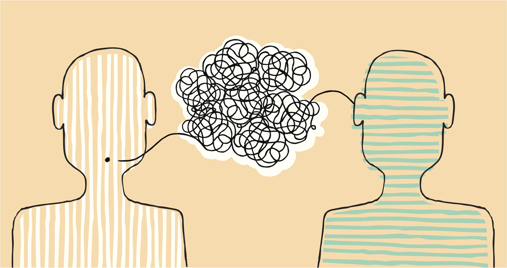

We investigate acoustic cues in the human voice reflecting specific positive emotional states.
Vocal communication has been defined as the interaction between a producer (say a speaker), sending a signal (a word) to a receiver (a listener). Thus, in an exchange between two persons, a vocal signal conveys information with verbal or nonverbal content from producer to receiver.
In our research, we sought to establish, where possible, patterns of vocal acoustic cues that are characteristic of distinct positive emotions. You will be able to access the findings of our research on nonverbal vocal expressions associated with specific positive emotions across cultures (Japan, Namibia, and Netherlands) and the lifespan (from the age of 4 years).

- Positive Emotions: Although happiness and joy mostly used to refer to positive emotions, there are many other distinct positive emotions.
To see the definitions and examples, click the Positive Emotions.
- Acoustics: The measurement of acoustic features of the emotional voice has focused mostly on parameters in three domains: frequency (e.g., fundamental frequency, formant frequencies), amplitude (e.g., intensity), and duration (e.g., speech rate). In vocalizations, alterations in these basic dimensions and their combinations are determined by respiration, phonation, resonance, and articulation. Physiological changes, including those relating to emotional states, result in specific modifications in the vocal apparatus that generate changes in acoustic parameters.
To learn about acoustic parameters click the Acoustics.
Research outputs will be listed below as they are published.